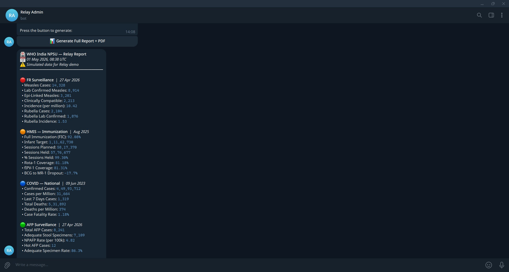

What it is
Relay is the system underneath a chat message. A non-technical user types /start into a Telegram conversation, presses one button, and receives a compiled, AI-analyzed, formatted PDF report aggregated from multiple data sources. The chat interface hides everything else.
The interesting work is what happens between the button press and the PDF: multi-source aggregation, LLM-driven executive summary, anomaly flagging, and channel-specific formatting. The Telegram interface is one of several adapters; the same backend can deliver to Discord, and Teams support is in progress.

The Telegram interface. Bot greeting, "Generate Full Report + PDF" button, immediate compiled output.

The compiled report streaming back, with state-by-state metrics, severity color coding, and a PDF attachment.